Firma s detskými tábormi vyhlásila vojnu sociálnym sieťam
„Kradnú deťom leto," hovorí riaditeľka Patrícia Mlyneková
Keď pred rokmi prišli do našich životov telefóny, nikto netušil, aký veľký dopad to bude mať na naše deti.
Nikto nepredpokladal, že z novej generácie sa stanú deti, ktoré nevedia prežiť deň bez telefónu. Deti, ktoré trávia celé leto doma. Scrollovaním. Samé.
Prekvapivo, práve jedna slovenská cestovná kancelária s detskými tábormi sa rozhodla postaviť proti tomuto trendu.
Vyhlásila vojnu sociálnym sieťam za to, že kradnú deťom detstvo, budúcnosť a potenciál, ktorý v nich je.
„Pracujeme s deťmi už viac ako 26 rokov. Ale nikdy to nebolo také zlé ako dnes."
„Deti v dnešnej dobe trávia viac času sledovaním YouTube, Instagramu alebo TikToku, ako vonku s kamarátmi.
Hovorí Patrícia Mlyneková — riaditeľka CK Bombovo.
Keď sa pozriete von na ulicu, už to nie je také ako kedysi, keď sa deti hrali a šantili bez prestávky.
Osobne si myslím, že deti týmto správaním prichádzajú o rozvoj svojich talentov a oberajú sa tak o šancu na lepšiu budúcnosť.
Kvôli digitálnemu svetu nevedia nadviazať skutočné vzťahy s kamarátmi, nevedia sa hrať vonku v prírode. A čo je najhoršie, ani si to neuvedomujú.
Keďže pracujem s deťmi už roky, vidím, ako sa tento trend zhoršuje každý jeden rok.
Deti sú smutnejšie, majú viac úzkostí, depresií, a nevedia komunikovať s rovesníkmi. A navyše strácajú sebavedomie a sociálne zručnosti, ktoré sú kľúčové pre ich budúcnosť.
Každý rok, ktorý strávia s telefónom, je rok, ktorý už nikdy nedostanú späť. Rok bez skutočných zážitkov. Bez skutočných priateľstiev. Bez momentov, na ktoré sa pamätá celý život.
Chceme, aby sa deti vrátili k starým návykom, kedy čas netrávia cez leto na telefóne alebo počítači, ale trávia ho vonku v prírode s kamarátmi."
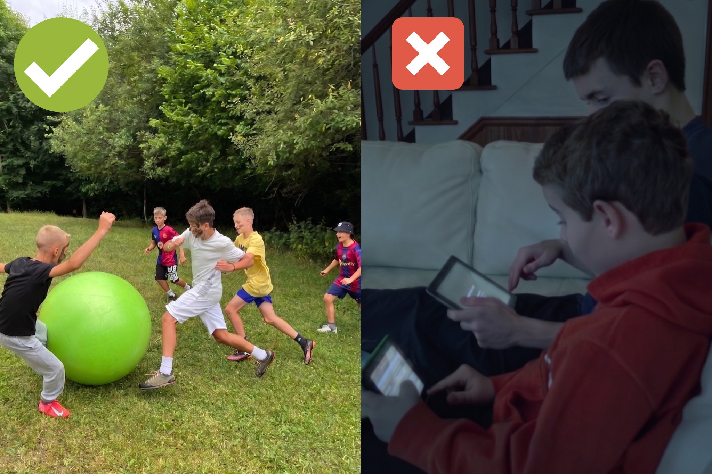
Nie je to však vina rodičov
Väčšina ľudí by zničené detstvo dávala za vinu rodičom, no my si myslíme pravý opak.
Aj keď je pravda, že rodičia nemôžu s deťmi tráviť toľko času ako v minulosti, nie je to ich chyba.
Dnešná doba od rodiča vyžaduje viac hodín v práci, viac povinností a oveľa viac stresu ako kedysi.
Rodičia nemajú možnosť zabezpečiť svojim deťom leto plné zážitkov na ktoré budú spomínať do konca života.
Nie preto, že by nechceli. Ale preto, že jednoducho nemajú čas. A to ich bolí najviac.
Letné tábory sa tak stali jedným z mála spôsobov ako dať deťom leto plné zážitkov v prírode a vyhrať vojnu s technológiou.
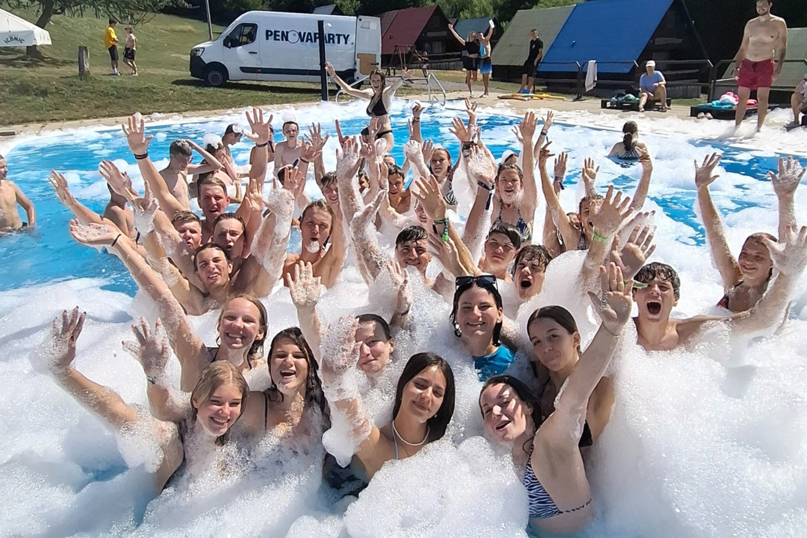
Väčšina rodičov sa snaží aj napriek pracovnej vyťaženosti vymyslieť ako dať deťom leto plné zážitkov. Vozia deti k starým rodičom, berú ich na rodinnú dovolenku, organizujú výlety cez víkend.
Ale aj keď tieto riešenia čiastočne pomôžu, každé jedno dieťa si so sebou berie telefón alebo inú formu modernej technológie. Takže, aj keď sa rodič snaží dieťaťu spraviť v lete program a dať mu zážitok, tak dieťa z toho leta skoro nič nemá.
Žiadnych nových kamarátov, žiadne dobrodružstvo, žiadne zážitky, ktoré by si pamätalo.
A tak sa letné tábory stali jedným z mála miest, kde deti skutočne majú šancu zažiť leto, na ktoré nikdy nezabudnú.
- Deti sa vrátia domov s novými kamarátmi, ktorých by inak nikdy nespoznali.
- Zažijú dobrodružstvo v prírode, ktoré na žiadnej obrazovke nenájdu.
- Vybudujú si sebavedomie, ktoré im zostane na celý život.
- Naučia sa byť samostatné bez toho, aby potrebovali rodiča pri každom kroku.
- Naučia sa spolupracovať a komunikovať s ľuďmi, ktorých predtým nepoznali.
- A o desať rokov budú stále rozprávať o lete, ktoré zažili na tábore.
A nie sú to len prázdne slová. Výskumy ukazujú, že až 92% detí uviedlo, že im tábor pomohol vybudovať sebavedomie a pozitívny vzťah k sebe samému. (Zdroj: American Camp Association)
A až 65% detí zaznamenalo výrazný rast v oblasti sociálnych vzťahov a začlenenia sa do kolektívu. (Zdroj: University of Waterloo)
Zážitky z tábora pretrvávajú ešte dlho po jeho skončení
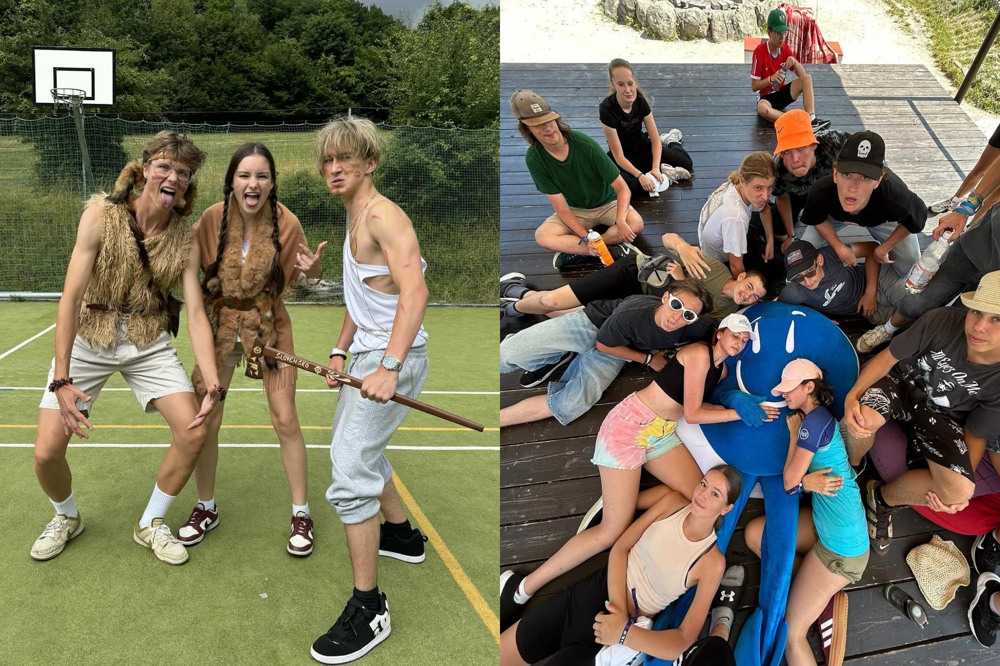
Deti si zo zážitkov z tábora odnášajú pozitívne spomienky na detstvo počas celého života, čo má pozitívny dopad na ich budúcnosť.
Vybudované sebavedomie a zručnosti, ktoré sa na tábore naučili sa im vracajú do pamäti dlho po jeho skončení.
A čo je najdôležitejšie, deti si odnášajú priateľstvá, ktoré trvajú ďaleko za hranice jedného týždňa.
„Z našich táborov v Bombove si deti každoročne odnášajú kamarátstva ktoré trvajú celý rok. Prídu na tábor sami, jeden dva dni sa oťukávajú a potom už nevedia prestať rozprávať a behať.
Veľa krát sa nám stalo, že sa vytvorila taká silná partia detí, že sa stretávali ešte dlho aj po skončení tábora.
A čo nás teší najviac, vidíme ako deti ktoré k nám prichádzajú hanblivé a uzavreté, odchádzajú o týždeň neskôr ako sebavedomé a otvorené."
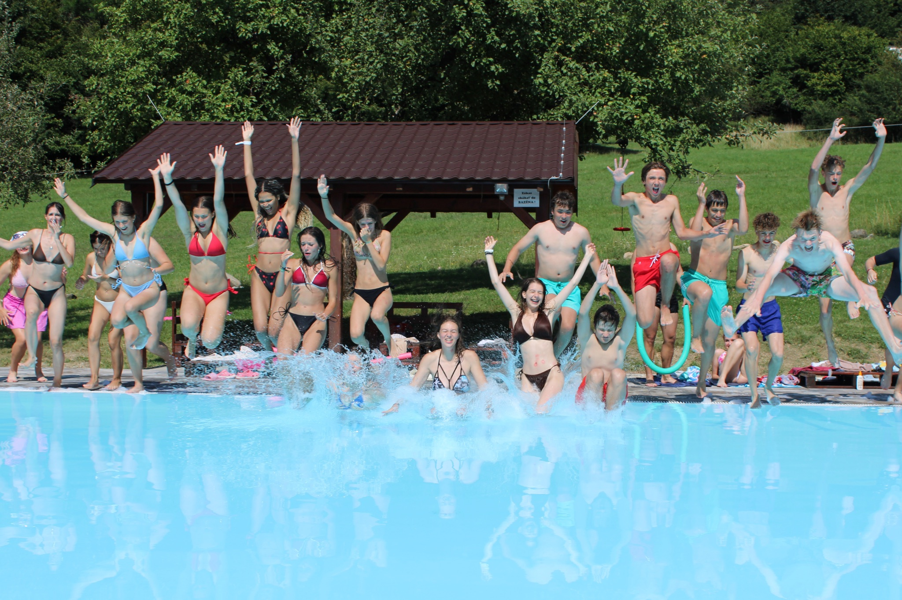
V redakcii sa však pýtame: „Oplatí sa pre rodičov kúpiť týždenný tábor?"
Týždeň letného tábora stojí u väčšiny cestovných kancelárií na Slovensku od 400€ do 500€ za týždeň. No to nie je vždy konečná cena, ktorú rodič zaplatí.
U mnohých poskytovateľov si rodič musí priplatiť za veci, ktoré by mal tábor obsahovať automaticky. Výlety počas týždňa nie sú v cene. Tričko s logom tábora nie je v cene.
Niektoré aktivity, ktoré sú súčasťou programu taktiež nie sú v cene. Rodič ktorý si myslel že zaplatil 450€ za tábor na konci zistí, že skutočná suma bola bližšie k 600€.
Riaditeľka cestovnej kancelárie Bombovo sa rozhodla povedať stop týmto nespravodlivým praktikám a ponúknuť rodičom tábor za oveľa nižšiu cenu ako by ho našli inde.
„U nás v Bombove sa deťom snažíme dopriať leto, na ktoré nikdy nezabudnú a bojujeme tak proti technológiám, ktoré ničia deťom budúcnosť.
Nechceme, aby cena tábora bola niečo, čo rodiča odradí od kúpy tábora pre svoje dieťa. Snažíme sa aby si každý vedel dovoliť kvalitný týždenný tábor bez toho aby museli platiť 600€."
Tábory CK Bombovo sú jedny z mála, ktoré stále stoja priemerne len 360€ na dieťa. A čo je najlepšie, táto suma je konečná. Žiadne príplatky, žiadne skryté poplatky. Tričko aj všetky výlety sú v cene tábora, čo robí Bombovo oproti konkurencii často aj o 160€ lacnejším.
Takže aj keď tábory na Slovensku nie sú najlacnejšie, CK Bombovo ich robí dostupnými pre každého rodiča.
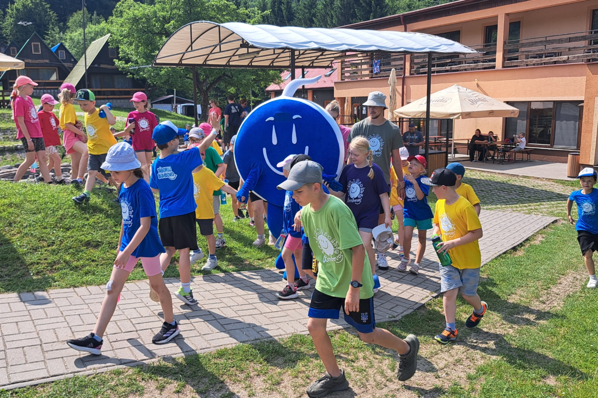
A tak sa úspešne už roky snaží bojovať proti tomu, aby deti trávili leto za telefónom, a ponúka im skutočné zážitky a nové priateľstvá vonku v prírode.
Čo nás v redakcii na CK Bombovo zaujalo najviac?
Najviac nás zaujal fakt, že CK Bombovo má neuveriteľnú návratnosť až 86% detí na letných táboroch. To znamená, že 8 z 10 detí sa vráti na tábor do Bombova minimálne ešte raz po tom, čo tam boli prvýkrát.
Keď sa dieťa chce na tábor vrátiť, je to najlepší dôkaz toho, že sa tam cítilo dobre. A práve táto 86% návratnosť hovorí za Bombovo viac ako akákoľvek reklama.
CK Bombovo sa rozhodlo ponúknuť všetkým čitateľom nášho článku zľavový kód v hodnote 20€ na letný tábor v roku 2026. Čím ich robí ešte o niečo lacnejším ako konkurencia.
KÓD: LT2026
Ak chcete zľavu využiť, kliknite na tlačidlo nižšie, vyberte si jeden z voľných táborov a zadajte kód „LT2026" pri vyplnení registračného formulára.
P.S. Vzhľadom na vysoký dopyt po táboroch CK Bombovo v roku 2026 je táto zľava dostupná len pre prvých 100 zákazníkov. Odporúčame neváhať a využiť ju čím skôr.
Zo stoviek recenzií na Facebooku CK Bombovo sme vybrali tie, ktoré nás najviac oslovili
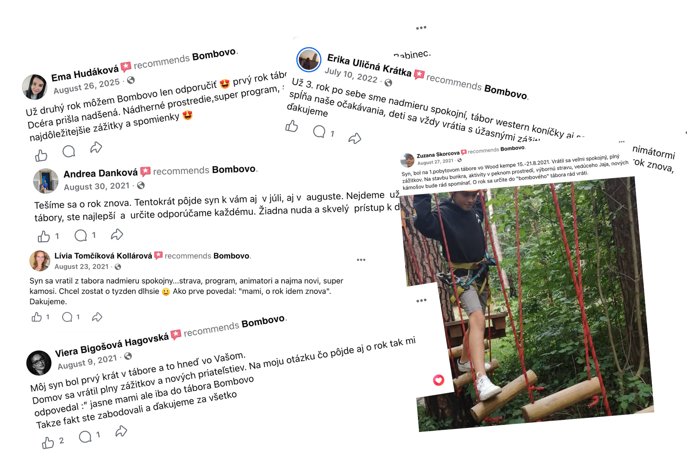
Za 26 rokov úspešného pôsobenia dokázala CK Bombovo nadchnúť viac ako 50 000 detí. A stovky rodičov sa rozhodli napísať recenziu po tom, čo sa ich dieťa vrátilo domov spokojné.
Napríklad mamina Emma Hudáková napísala:
„Už druhý rok môžem Bombovo len odporučiť. Prvý rok tábor Harry Potter, tento rok Babinec. Dcéra prišla nadšená. Nádherné prostredie, super program, animátori, jedlo a čo je najdôležitejšie zážitky a spomienky." — Emma Hudáková
Jej dcéra sa na tábory CK Bombovo vrátila dva roky za sebou. A podľa interných informácií má už tábor zaregistrovaný aj na tento rok. Skvelí animátori a prostredie jej pomohli vytvoriť spomienky na celý život, a preto sa tam rada vracia každý jeden rok.
Andrea Danková napísala:
„Tešíme sa o rok znova. Tentokrát pôjde syn k vám aj v júli, aj v auguste. Už neskúšame iné tábory, ste najlepší a určite odporúčame každému. Žiadna nuda a skvelý prístup k deťom." — Andrea Danková
Kvalitné tábory nepotrebujú konkurenciu. Spokojné deti sa na ne vracajú každý jeden rok.
Dcéra Alexandry Bielikovej bola na tábore prvýkrát a jej mama napísala toto:
„Dcéra bola prvý raz v tábore a vrátila sa úplne nadšená. Všetko si chválila, ubytovanie, stravu, program, animátorov. O rok chce ísť určite znova." — Alexandra Bieliková
Pre CK Bombovo je dôležité, aby aj deti ktoré prídu na tábor prvýkrát odchádzali spokojné. A z odpovedí rodičov je jasné, že sa im to darí.
Kroky ktoré musíte urobiť aby ste dali svoje dieťa na tábor
Napriek tomu, že kúpa tábora sa môže zdať zložitá, CK Bombovo robí tento proces úplne jednoduchým.
Jediné, čo stačí spraviť je ísť na ich webstránku www.bombovo.sk a vybrať si jeden zo 17 táborov ktoré majú v ponuke.
Každý tábor sa nesie v inej téme a je určený pre rôzne vekové kategórie. Či už je tábor akčný, náučný, umelecký, teenagerský alebo čisto strávený v lese v prírode, každý rodič si nájde ten správny pre povahu svojho dieťaťa.
CK Bombovo tento proces robí ešte jednoduchším vďaka ich „Hľadáčiku táboru" na webe — rodič jednoducho zadá vek dieťaťa, termín ktorý mu vyhovuje a typ tábora ktorý hľadá a okamžite získa zoznam táborov ktoré presne zodpovedajú jeho požiadavkám.
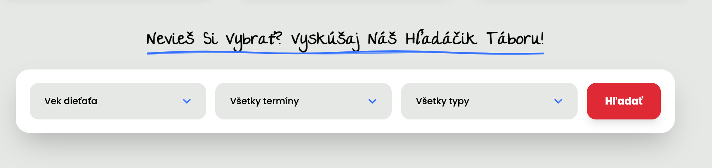
Jediné čo stačí urobiť po vybratí tábora je rezervovať si termín, ktorý vám cez leto najviac vyhovuje a vyplniť rezervačný formulár.
Ich tím sa už o všetko postará a zariadí, aby boli všetky dokumenty vybavené.
Dva tábory CK Bombovo sa podarilo vypredať už v apríli
Tábory sa zvyčajne vypredávajú v máji. No aj tak CK Bombovo dokázalo vypredať už dva z ich najpredávanejších táborov ešte v apríli.
Aby sa deti na chatkách a izbách netlačili, museli výrazne obmedziť kapacitu táborov. Chcú totiž aby sa každé dieťa cítilo dobre a dostalo plnú pozornosť animátorov.
To len dokazuje veľký záujem rodičov v dnešnej dobe dať deti na kvalitný tábor, ktorý deťom niečo do budúcnosti dá. Presne taký, aký robí CK Bombovo.
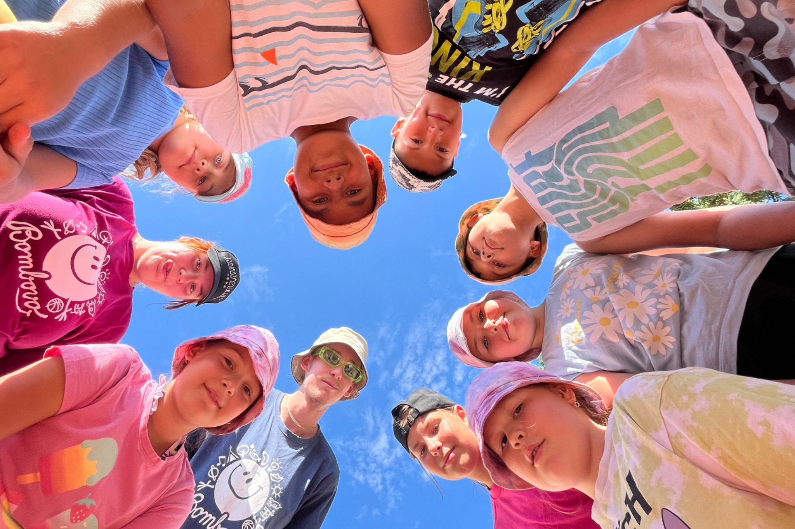
Špeciálna ponuka pre našich čitateľov
V rámci ich boja proti sociálnym sieťam sa CK Bombovo rozhodlo darovať všetkým našim čitateľom zľavový kód v hodnote 20€ na ich letné tábory v roku 2026.
KÓD: LT2026
Ak chcete dať dieťa na letný tábor, my veríme, že neexistuje lepšia možnosť ako ísť v lete na tábor s CK Bombovo.
Neváhajte a zaregistrujte svoje dieťa na letný tábor s kódom „LT2026". Doprajte mu leto, na ktoré bude spomínať do konca života. Uistite sa, že to urobíte čím skôr, kým sa všetky tábory CK Bombovo nevypredajú.
Komentáre (47)
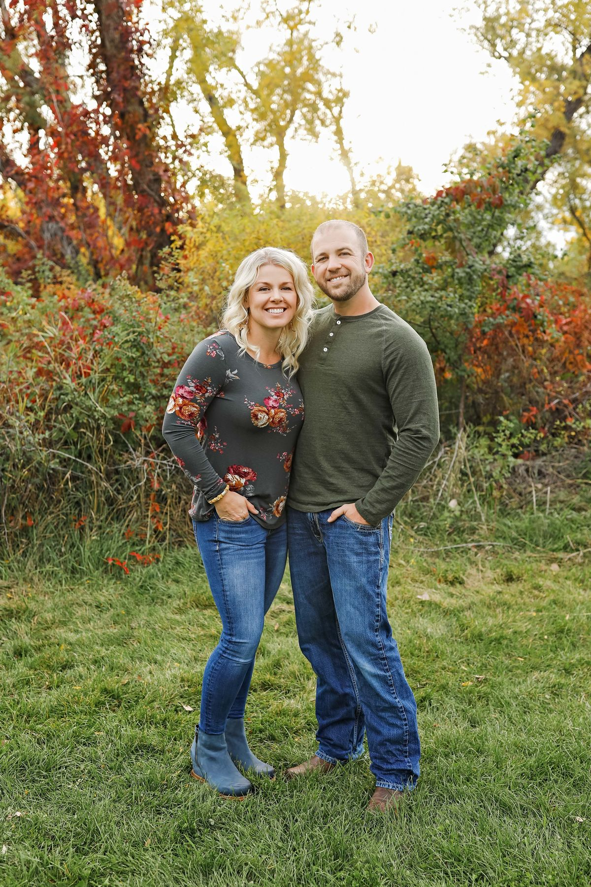
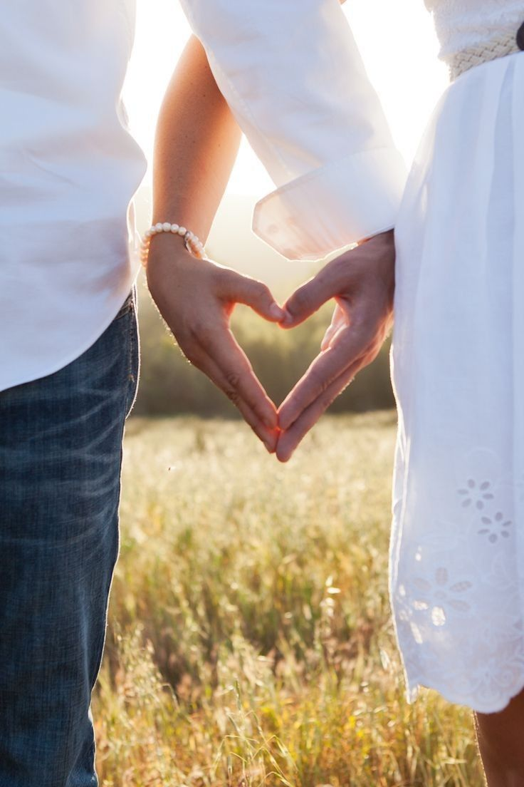
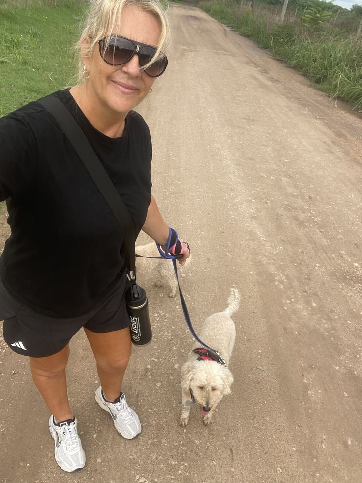
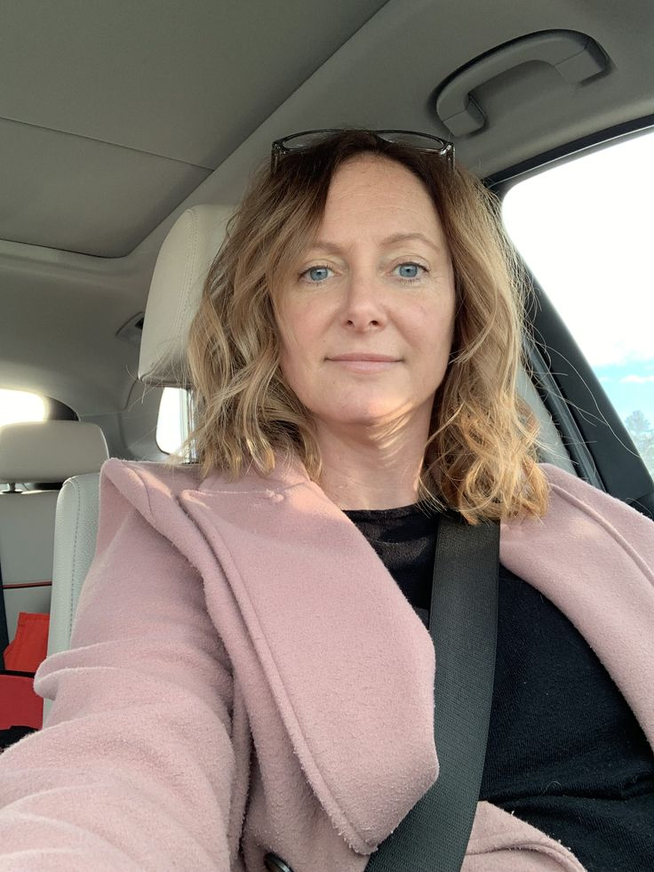